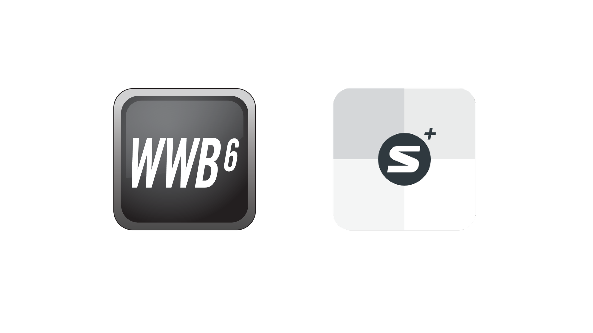
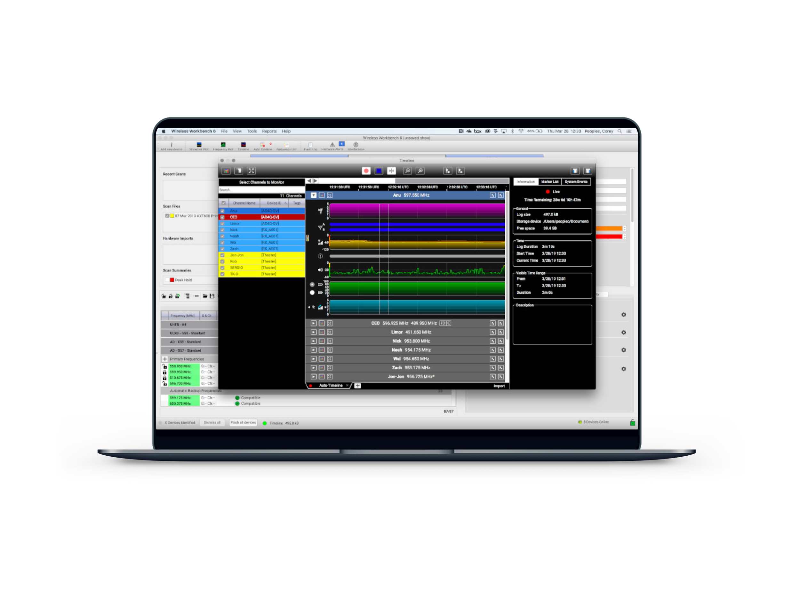
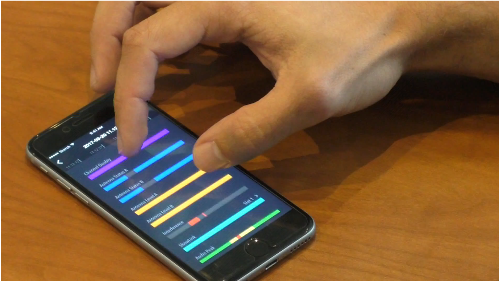
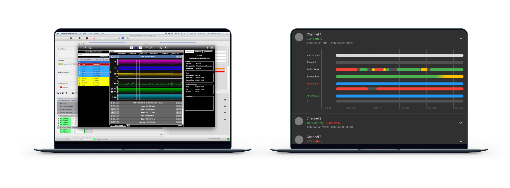
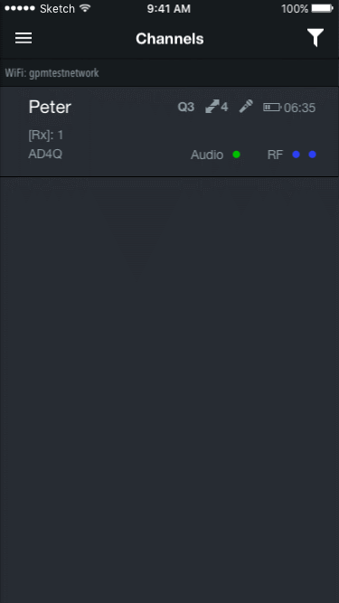

ShurePlus Channels
Overview
End-to-end mobile app design for Shure's professional wireless system


Role
As the lead UX designer in the team, I am in charge of user experience design and driving user research with our user researchers for upcoming features in the app. My responsibilities include ensuring Channels is intuitive in conjunction with WirelessWorkBench (Desktop App that controls hardware devices) and Shure hardware devices, as well as the consistentcy across platforms.
I am also responsible for leading the UX team in India to work on the Android version of Channels.
Target Audience
Our target audience is mainly audio engineers, who are in charge of monitoring channels, pre-show planning, doing sound checks and mixing. They are the key to your awesome concert experience!
"A dropout of audio would ruin the whole performance. I make sure the wireless experience is safe and sound."
— Audio Engineer
ShurePlus™ Channels delivers time-saving convenience to roam the performance space while monitoring key Shure wireless system parameters from an iOS device. The app automatically discovers and easily connects over Wi-Fi to networked, compatible Shure hardware and relays critical channel information including RF signal strength, audio levels, and remaining battery life. Quickly switch between any of your wireless channels using the sortable channels list. Mobile control of wireless channel settings can be added via in-app purchase. Unlocking this feature allows remote adjustment of frequency assignments, audio gain, muting, and more. When combined with ShowLink® Remote Control for Axient and Axient Digital systems, transmitter and receiver settings can both be adjusted simultaneously, a powerful addition to the industry-leading Axient and Axient Digital feature set.
Currently there are two applications that support hardware configuration from Shure:
WirelessWorkBench is a desktop software for audio professionals to configure their wireless systems.
ShurePlus Channels is a simplified mobile version that provides monitoring and control of Shure wireless systems.

Timeline is currently a feature on WirelessWorkBench, which allows users to record their channel status over time, including channel quality, antenna status, interference, audio peak, battery status..etc. The goal is to provide an on-the-go Timeline experience for mobile(Channels) users while improving the current experience on desktop(Wireless Workbench).

Findings
We ran bi-weekly interviews with external audio engineers. We found out that for Timeline on WirelessWorkbench, they usually run it for days and with a large number of channels(30+). The current timeline experience is complex and requires steep learning time to onboard.
Through qualitative research we found out that users who use Timeline on a mobile phone would use it for doing a walk-test — they would bring a receiver and walk around for 2 minutes to make sure the microphone is working great. They also would like to have the ability to export the file from phone to desktop, or vice versa.
For further iterations, we pivoted our focus to helping users quickly record one channel at a time, and focusing flows to optimize the walk-test experience. e.g Mark the interesting time, and export the file to the desktop.

Design
I started tackling the information density of the current Timeline on desktop application by the following methods:
- Aesthetic and minimalist design: Clean up the information hierarchy by collapsing different channels at a time.
- Recognition rather than recall: Instead of ambiguous icons, use straightforward content to help users figure out different types of information.
- Visibility of system status: Use animated shapes and colors to help users identify errors.
- Dark Mode: Users usually operate the application in dark (Backstage at the concert). Dark Mode helps users with ease of eyes.

For mobile users, we know that users are:
- Not heavy Timeline users
- Record last than 2 channels
- Use it for a specific purpose: walk-test
- Record for less than 3 mins
- Need to export the file to the desktop
The design focuses on the mobile use case with the ability to quick record, tag and share.

The feature is currently under development on iOS(iPhone and iPad) and Android. Throughout the process, we also helped shape the monetization strategy for Channels. (You paid in the app to get mobile use cases!) Also, the feedback in the field helped shape the future of Wireless Workbench.